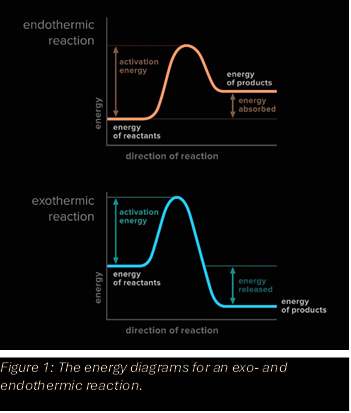

In the energy diagram of a chemical reaction, you will always find that before turning into the products, the reactants have to go through a transition state. The energy required to get from the reactants to this transition state is called the activation energy of the reaction, and it has a lot to do with the rate of a chemical reaction, which will be discussed in this section.
A high activation energy means a lot of energy is required to get a reaction to run. For a reaction to occur, the reactants have to pass the required energy barrier to reach the transition state, from which they will react to form the products. This means that a very large activation energy makes it so that only high energy collisions will lead to a reaction, which means that the rate of the reaction will either be very slow, or that the reaction will have to be done under relatively extreme conditions (like a very high temperature). As mentioned previously, the use of a catalyst decreases this activation energy, increasing the rate of the reaction.
In the 'rate laws' section we discussed the rate constant (k), however, k is not the same for every condition. The rate constant is dependent on the activation energy and temperature according to the Arrhenius Law:
\[k(T) = A\times e^{-\frac{E_A}{RT}}\]
in which \(E_A\) is the activation energy of the reaction, T is the absolute temperature, R is the gas constant, and A is a factor that depends on the chemical reaction that is occurring, called the preexponential factor.
Looking at this formula, you can see that a decrease in activation energy or an increase in temperature will lead to a higher value for k(T), and therefore a higher rate of reaction.
(Credits go to the Dutch high school system and national chemistry Olympiad for teaching me this stuff)
Written by Imre Bekkering